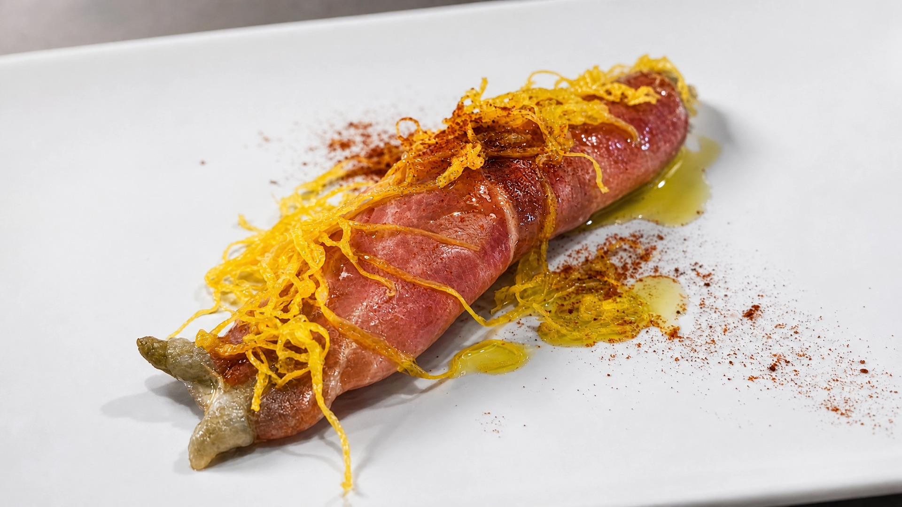
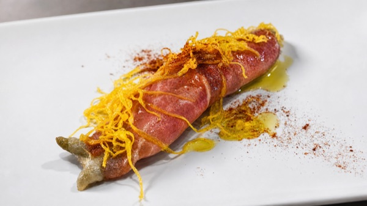
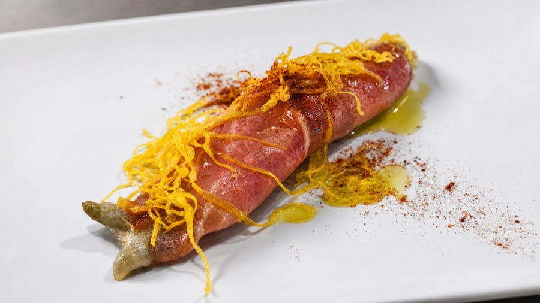

Guisos, carnes y salmorejo casero, en un mesón con mucho encanto.
Alfonso, Alfredo y su cocinera preparan cada plato como en casa, en un local pequeño de ambiente taurino donde el trato de familia es tan protagonista como el guiso del día.
Un mesón con mucho encanto y ambiente taurino
En pleno centro de La Línea de la Concepción, Mesón Albero es cocina de toda la vida: guisos, carnes, cremas y salmorejos caseros, servidos con el trato cercano de un matrimonio que lleva la sala y la cocina como en casa. Sin cartas de autor ni fuegos de artificio — solo sabor y calidad a precios ajustados.

Los platos destacados
Google recoge estos tres como los más pedidos de la casa. La carta completa cambia según el día y se confirma en sala.

Hamburguesa
Una de las más pedidas de la casa.

Mini Burguer de Retinto
Versión reducida, con carne de retinto.

Lagarto Ibérico al Ajillo
Clásico de guiso casero de la casa.
Un vistazo al mesón





Lo que dicen en Google
153 reseñas en Google, con el vino, las tapas y el trato familiar como protagonistas.
Extensa variedad de vinos y cerveza tirada con mucha arte por Alfonso.
El mejor ambiente, buena comida, buen vino, y todo muy agradable, volveremos.
Comida buenísima, un diez para la cocinera y muy buen trato de Alfredo, un diez.
Pequeño pero resultón, un lugar con encanto y ambiente taurino… guisos, carnes, cremas, salmorejos caseros, con sabor y calidad a precios más que ajustados.
Un mesón con mucho encanto. La comida estaba deliciosa, cuidada hasta el último detalle y con una calidad excelente. El trato fue cercano, amable y muy profesional. Repetiremos sin dudarlo.
Restaurante, comida y servicio espectacular. Lo regenta un matrimonio muy simpático y profesional. Todo muy familiar y casero.

Ven a probarlo
- Dirección
- C. López de Ayala, 11, 11300 La Línea de la Concepción, Cádiz
- Precio medio
- 20–30 € por persona
- Horario
- Abre para cenas a partir de las 21:30 (horario completo por confirmar)
- Reservas
- 676 02 54 76